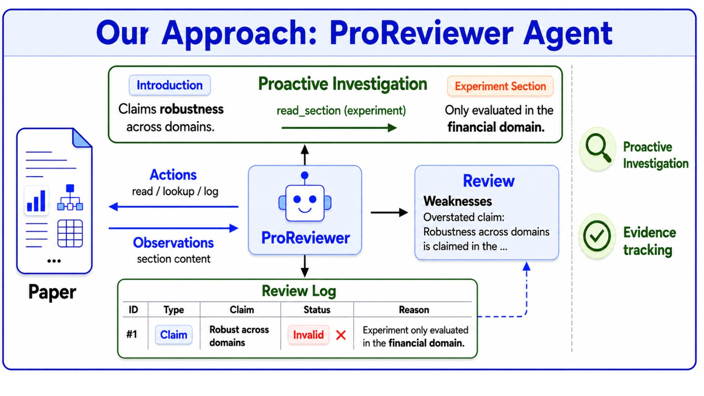
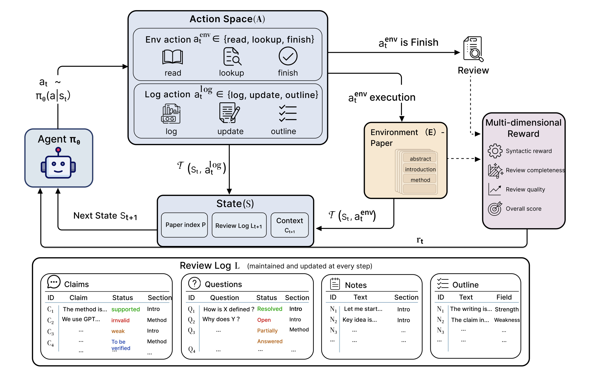
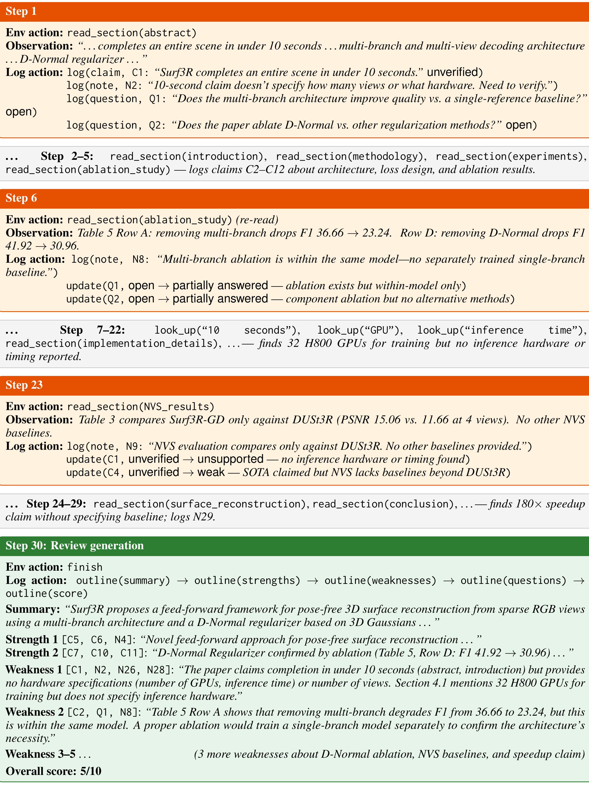
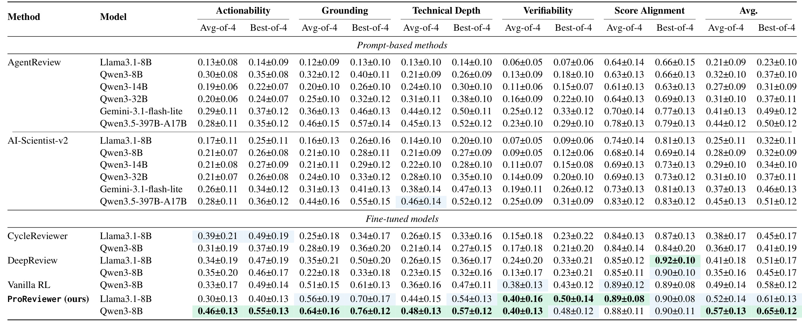
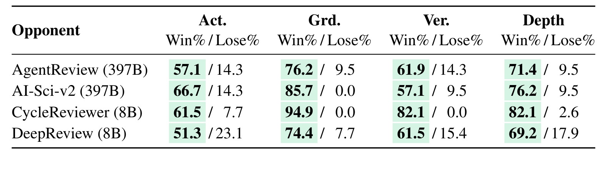
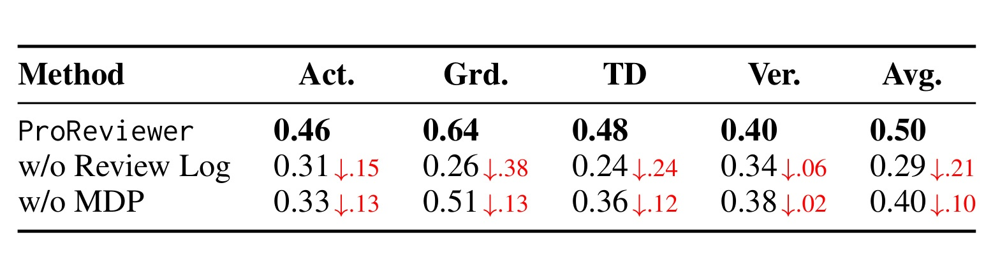
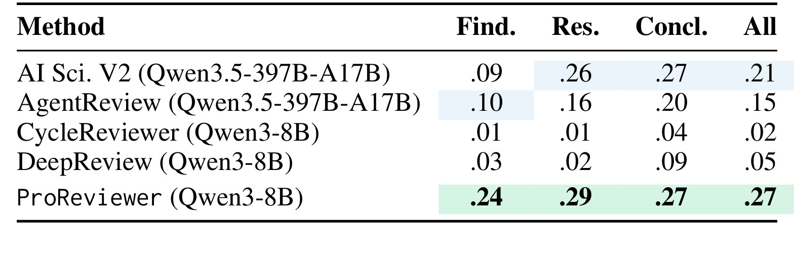
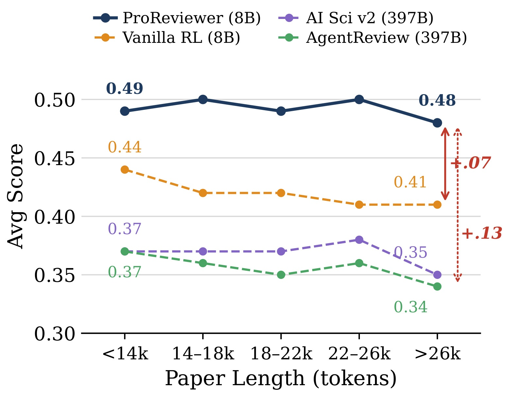

From Passive Generation to Investigation: A Proactive Scientific Peer Review Agent 精读笔记
论文入口：arXiv:2606.13349。本文作者为 Haishuo Fang、Yue Feng、Iryna Gurevych，一作来自 Technical University of Darmstadt 的 UKP Lab，并与 National Research Center for Applied Cybersecurity ATHENE、University of Birmingham 合作。论文发布于 2026-06-11，主类别是 LLM / NLP agent。项目页已核验为 https://github.com/UKPLab/arxiv2026-ProReviewer，但截至本轮查看 README 仍是 Under Construction，因此这篇笔记只把它作为已存在但尚未完整开放实现的项目入口，而不把代码可复现性当作已确认事实。
1. 背景和问题
这篇论文讨论的是一个已经很常见、但经常被过度简化的任务：让大模型自动生成 scientific peer review。过去两年里，相关系统大致沿着三条路线发展。第一类是直接 prompt，一个模型读完整稿件或若干摘要片段后一次性输出 summary、strengths、weaknesses、questions 和 score。第二类是固定多阶段 pipeline，例如先总结、再找 novelty、再看实验、再组装 review。第三类是 multi-agent 或 role assignment，让不同 agent 扮演方法 reviewer、实验 reviewer、写作 reviewer，最后汇总。它们看起来流程更复杂，但论文指出这些系统有一个共同前提：调查路径在开始前就基本固定。模型更像是在被动地完成“读过这些段落后生成评论”，而不是像人类 reviewer 一样根据已经看到的证据改变下一步要查的内容。
作者把这个区别概括为从 passive generation 到 proactive investigation。所谓 passive，不是说系统完全不读论文，而是说系统缺少“我刚才看到一个可疑 claim，所以我要去实验表或消融章节核验它”的状态化能力。比如 introduction 声称方法在多个 domain 上 robust，但实验只覆盖 financial domain；人类 reviewer 通常会把这个 claim 记下来，翻到实验部分查是否有跨 domain evidence，如果找不到就把它写成 grounded weakness。固定 pipeline 的大模型则可能在 introduction 阶段把它当作 strength 记下，后面即使读到实验限制，也不会回到这个 claim 上更新判断。论文认为这正是当前 LLM review 常被批评“generic、shallow、unsupported”的原因之一：它们可以写出像审稿意见的文本，却未必维护一条可追踪的调查链。

Figure 1 很适合放在问题背景里，因为它把论文的核心失败模式画成了一个小型审稿故事：论文在 Introduction 中声称 robustness across domains，ProReviewer 不直接接受这个说法，而是执行 read_section(experiment) 去实验章节寻找证据；当实验只覆盖 financial domain 时，它把 review log 中的对应 claim 标成 Invalid，并在最终 review 里形成有证据支撑的 weakness。这里最重要的不是图里的机器人形象，而是右侧“Proactive Investigation”和“Evidence tracking”两个词的组合：主动调查负责决定下一步去哪里看，证据追踪负责让最终 criticism 能回指到具体日志条目。没有这两个机制，自动审稿很容易变成“摘要加模板化意见”。
这篇论文的问题意识还有一个更细的层次：peer review 不是普通长文问答。普通问答往往有一个明确 query，系统只要在文档里找答案；审稿则要求模型先发现哪些地方值得质疑，再决定如何验证这些质疑，最后还要把发现组织成可操作、可验证、有技术深度的反馈。也就是说，reviewer 的认知对象并不只是论文内容本身，还包括“我已经怀疑了什么”“哪些问题尚未解决”“某个 claim 是 supported、weak 还是 invalid”“最后的 strength/weakness 是否有 evidence tag”。传统 scratchpad 或 chain-of-thought 可以保存一些中间推理，但如果这些内容只是自由文本，就很难选择性更新某个早期 claim，也很难强制最终 review 的每个 point 都引用有效证据。
因此 ProReviewer 的核心主张可以拆成三句话。第一，把审稿过程形式化为一个 Markov Decision Process，让 agent 在每一步根据当前 state 选择下一步行动，而不是按预设流程走完。第二，设计一个 structured review log，显式维护 claims、questions、notes 和 outline，让调查过程有可更新的内存结构。第三，用 SFT 加 GRPO 训练策略，让 agent 不仅会生成合法动作，也能在多维奖励下学习更深、更 grounded、更接近人类评分的审稿行为。这个组合的价值在于，论文不只是换了 prompt，而是把“审稿”从文本生成任务改写成了带状态、动作、日志和奖励的序列决策任务。
当然，这个问题设置也有边界。本文当前的 action space 只在 manuscript 内部调查，没有真正接入外部 literature search、citation graph、code execution 或 reproducibility checking。作者在方法部分明确说，这样做是为了隔离 core design 的效果，外部检索动作可以在模块化 MDP 中继续扩展。换句话说，ProReviewer 解决的是“模型能不能在一篇论文内部主动查证和追踪证据”，而不是“自动 reviewer 能不能完整替代人类审稿人”。这一点很关键，因为科学审稿的 novelty、相关工作完整性、实验可复现性，很多时候都需要论文外部证据。本文的贡献更像是给 LLM-assisted review 加上一个可学习的调查骨架。
2. 方法
2.1 不固定路线，而是把审稿写成 MDP
ProReviewer 的第一步是把审稿过程定义成一个 MDP：$M = (S, A, T, E, R)$。这里的 $E$ 是论文环境，也就是 agent 可以读取、搜索和逐步观察的 manuscript；$S$ 是状态空间；$A$ 是动作空间；$T$ 是状态转移；$R$ 是奖励。这个形式化的关键不是数学符号本身，而是它让“下一步该看哪里”成为策略学习的一部分。固定 pipeline 会提前规定“先读 abstract，再读 method，再读 experiment”，而 MDP 允许 agent 在发现可疑 claim 后决定 look up 一个关键词、重读某个 section，或者更新 log 中已有条目的状态。
状态被定义为 $s_t = (C_t, L_t, P)$。$C_t$ 是当前上下文，包含最近一次动作和观察，例如刚读到的 section 内容或关键词搜索结果；$L_t$ 是 review log，记录累计证据；$P$ 是 paper index，包括标题和 table of contents，用来指导导航。初始状态是 $s_0 = (\emptyset, \emptyset, P)$，也就是 agent 只知道论文目录，没有任何观察和日志。之后每一步策略从 $a_t \sim \pi_\theta(\cdot \mid s_t)$ 采样动作，转移函数执行这个动作并产生 $s_{t+1}, r_t = T(s_t, a_t)$，其中新的状态是 $s_{t+1} = (C_{t+1}, L_{t+1}, P)$。这组公式把审稿拆成一个循环：观察论文的一部分，更新日志，再基于更新后的日志决定下一步。
符号解释：$S$ 表示可达状态集合，$A$ 表示环境动作和日志动作的联合动作空间，$T$ 是确定性转移函数，$E$ 是论文环境，$R$ 是多维奖励；$C_t$ 是第 $t$ 步最近观察到的上下文，$L_t$ 是第 $t$ 步已经维护出的 review log，$P$ 是论文标题和目录索引，$a_t$ 是策略 $\pi_\theta$ 在当前状态下选择的下一步动作，$r_t$ 是该动作产生的即时或广播奖励。这个公式块的作用不是引入新的理论难度，而是把审稿时“读、记、查、改、写”的过程统一放进同一个可学习循环。
动作空间分为环境动作和日志动作。环境动作负责从论文里拿信息：read_section 读取某个 section 的全文，look_up 在论文中搜索关键词，finish 结束 episode。日志动作负责维护 internal workspace：log 新增 claim、question 或 note，update 根据新证据修改已有 claim/question 的状态，outline 把已经确认的证据组织成最终 review 的某个点。一个时间步里的动作实际上包含 $a_t^{env}$ 和 $a_t^{log}$ 两部分：前者改变观察，后者改变日志。这样的设计避免 agent 只读不记，也避免它记了一堆自由文本却无法在最终输出中引用。

Figure 2 展示了方法的主框架。左侧是 agent π_θ，中间上方是 action space，右侧是 environment 和 reward，底部是持续维护的 review log。图中最值得注意的是，状态不是“全文上下文窗口”，而是 paper index、review log 和当前 context 的组合；这意味着 agent 不需要每一步都把整篇论文塞进 prompt，而是用日志保存跨步信息。图下方的 Claims、Questions、Notes、Outline 四个区域说明了 log 的结构化属性：claim 有 status 和 section，question 有 resolution status，note 保存中间发现，outline 则把最终 review point 绑定到证据。这样的状态设计同时服务两个目标：一方面让策略能根据已发现的问题决定下一步，另一方面让最终 review 不至于脱离证据链。
转移函数在本文中是 deterministic：给定当前状态和动作，环境动作会返回新的观察，日志动作经过 schema validation 后更新 $L_t$。例如 agent 调用 look_up("GPU")，环境返回所有匹配位置；同时 agent 可以对某个 question 执行 update，把它从 open 改成 partially_answered，并写入 answer_sections。确定性转移的好处是训练和验证更清楚，错误可以分解到动作格式、无效 section 名、无效 evidence ID 等具体原因。它也让奖励可以在 step level 直接惩罚无效调用，而不是等最终 review 出错后才回传一个模糊信号。
这个 MDP 形式还有一个容易忽略的点：当前 action space 不包含外部检索，但论文强调它是 modular 的。也就是说，未来可以增加 search_literature、check_code_repository、retrieve_citation_context 等 action，而不需要重写核心架构。本文之所以先限制在 manuscript 内，是为了证明即便只在论文内部，主动调查和结构化日志也已经能显著提高 grounding、technical depth 和 cross-section inconsistency detection。这是一个合理的实验控制：如果同时接入外部工具，性能提升可能来自检索而不是 review log 本身。
2.2 Review Log：claims、questions、notes 和 outline 的工作台
Structured review log 是 ProReviewer 最重要的状态组件。作者把 log 分成三类 evidence entries：Claims、Questions、Notes。Claims 是从论文中抽取出的作者断言，每条带有 source section 和 verification status，例如 supported、weak、invalid、to_be_verified。Questions 是 reviewer 在阅读中产生的疑问，每条带有 resolution status，例如 open、resolved、partially_answered。Notes 是自由形式的中间发现，但它也有 ID 和 section。最终的 Outline 则不是普通 note，而是准备进入最终 review 的 summary、strengths、weaknesses、questions、overall score。强制要求 strength 和 weakness cite existing evidence IDs，任何引用不存在 ID 的 review point 都会被拒绝。
这套 log 结构解决了两个传统 scratchpad 难题。第一是 selective revision。自由文本 scratchpad 里早期写下“method seems robust”后，后续很难精确更新这句话；结构化 claim 则可以从 to_be_verified 改成 weak 或 invalid，并记录 reasoning 和 cross_references。第二是 evidence grounding。最终 review 中的 weakness 如果写“baseline comparison is limited [C1, Q2, N5]”，系统可以检查 C1、Q2、N5 是否真的存在，是否来自相关 section，是否已被 resolved 或 supported。这种检查不能保证 review 一定正确，但能减少完全无出处的批评。
从认知流程看，Claims 和 Questions 的区分也很有价值。Claim 更像对作者陈述的抽取和验证，Question 更像 reviewer 主动生成的调查目标。比如论文声称“we use a diverse dataset”，这是 claim；reviewer 想知道“这个 diverse 是否覆盖不同 domain 或只是不同 benchmark split”，这是 question。ProReviewer 可以先 log claim，再 log question，随后在 experiments 中 look up domain、dataset 或 benchmark 名称。找到证据后，它可以 update claim status，也可以把 question 标成 resolved 或 partially_answered。这比单纯生成一段“dataset diversity should be discussed”更接近人类审稿过程。
outline 动作则把 log 和最终输出连接起来。它要求每个 final review point 属于 summary、strengths、weaknesses、questions 或 overall_score 之一，并且 strengths/weaknesses 必须带 tags。这个设计把最终文本生成推迟到证据较充分之后。换句话说，agent 不是读完一段就马上写最终 weakness，而是先积累 evidence entries，等调查链条足够完整时再 outline。这样的设计也让训练时可以检查 outline 是否引用无效 ID、是否重复同一个问题、是否缺少必要字段。

Figure 6 是方法章很好的补充，因为它把抽象 log 机制落到一个真实轨迹。案例中 agent 在 Step 1 读 abstract 后记录了 Surf3R “under 10 seconds” 的 claim，同时提出关于 multi-branch architecture 和 D-Normal regularizer 的问题；Step 6 重新读取 ablation_study 后发现 Table 5 的行能部分回答问题，但仍指出 within-model ablation 不是独立单分支 baseline；Step 7-22 又搜索 “10 seconds”“GPU”“inference time”，发现训练使用 32 H800 GPUs，但没有推理硬件或耗时说明；Step 23 继续读 NVS results，记录 NVS 只和 DUSt3R 比较；最后 Step 30 的 weakness 都引用 C、Q、N 证据 ID。这个案例说明 ProReviewer 的主动性不是“多读几次”这么简单，而是把每次重读和搜索都绑定到先前 unresolved 的问题上。
2.3 奖励：动作合法性、结构完整、内容质量和分数校准
训练一个能主动调查的 reviewer 不能只奖励最终文本像不像 review。论文把奖励分为 step-level 和 trajectory-level。step-level 主要是 syntactic validity，公式为 $r_{\mathrm{syn}}^t = -\mathbf{1}[\lambda_{\mathrm{form}} \vee \lambda_{\mathrm{exec}} \vee \lambda_{\mathrm{ground}}] \in \{-1,0\}$。这里 $\lambda_{\mathrm{form}}$ 表示 JSON 或 action schema 格式错误，$\lambda_{\mathrm{exec}}$ 表示无效动作名或无效 section 参数，$\lambda_{\mathrm{ground}}$ 表示最终 review point 引用了 log 中不存在的 evidence。这个奖励看起来很低层，但对 agent 系统很关键：如果动作格式不稳定，后面的 RL 会把大量信号浪费在工具调用失败上，而不是学习审稿策略。
trajectory-level reward 有三部分。第一是 review completeness，记为 $r_{\mathrm{fmt}} = \frac{1}{4}\sum_{i=1}^{4}\mathbf{1}[\mathrm{check}_i\ \mathrm{satisfied}]$，四个 check 是 summary、至少一个 strength、至少一个 weakness、overall score。这个奖励保证最终 review 有基本结构，但它不能保证内容质量。第二是 review content quality，拆成 technical depth 和 grounding 两个维度：$r_{\mathrm{qual}} = \alpha r_{\mathrm{depth}} + (1-\alpha)r_{\mathrm{grd}}$，实验中 $\alpha = 0.5$。Technical depth 评估 review 是否真正讨论方法细节、实验设计和技术假设，而不是泛泛说“实验不足”；Grounding 评估 critique 是否能回到论文具体内容，而不是 hallucination。第三是 score alignment，用 $r_{\mathrm{scr}} = \max(0, 1 - |\hat{s} - \bar{s}|/\kappa)$ 衡量模型给出的 overall score $\hat{s}$ 与人类平均分 $\bar{s}$ 的接近程度，$\kappa$ 是评分尺度范围。
总奖励写成 $r_t = w_{\mathrm{syn}}r_{\mathrm{syn}}^t + \sum_{k\in K} w_k r_k$，其中 trajectory-level rewards 在 episode termination 后计算并广播到所有步骤。这个做法的含义是：每一步都要保持动作合法，同时整个轨迹要导向结构完整、深度足够、证据扎实、分数校准的最终 review。它避免了只优化最终分数而忽略中间调查过程，也避免 agent 为了结构完整而生成浅层模板。尤其是 grounding reward 和 $\lambda_{\mathrm{ground}}$ 的组合，一个在内容层面评估证据性，一个在动作层面检查 evidence ID 合法性，两者共同推动 review log 成为真实工作台而不是形式化字段。
需要注意的是，technical depth 和 grounding 仍然依赖 LLM-as-a-judge。论文用 GPT-OSS-120B 作为 RL 阶段的 judge reward，最终评测又使用 GPT-5.4 nano、DeepSeek-V4 flash 和 RevUtil 三个 judge 聚合。这样的设计比单一 judge 更稳，但仍然存在 judge 偏好、版本不可复现、评分维度定义随模型变化的问题。本文的贡献不在于彻底解决自动评测，而是把评测信号用于训练一个更会调查的 agent。读者在复现时应特别关注 judge prompt、reward weight、采样次数和 score normalization，否则很难判断收益来自 agent 架构还是 judge 奖励风格。
2.4 训练：教师轨迹 SFT 到两阶段 GRPO
ProReviewer 的训练采用两阶段。第一阶段是 supervised fine-tuning，训练数据是从强教师模型 Qwen3.5-397B-A17B 蒸馏出来的 interaction trajectories。这里不是普通的“论文到 review”配对，而是包含 state、action、log operation、observation 的轨迹。SFT 的目的主要是让 8B backbone 学会合法使用 action schema、维护 review log、按 episode 形式工作。如果直接从 base model 做 RL，模型可能大量输出非法 JSON 或忘记 finish，训练效率会很差。
第二阶段从 SFT checkpoint 出发，用 GRPO 做强化学习。论文采用两阶段 curriculum：Phase 1 只使用 deterministic rule-based rewards，包括 syntactic validity、review completeness 和 score alignment；Phase 2 在保留 Phase 1 奖励的同时加入 LLM-judge-based content quality rewards。这个课程设计有现实意义。先训练动作合法性和结构完整性，可以让 agent 稳定执行审稿流程；再加入内容质量奖励，可以避免模型在还不会使用工具时就被高层主观评价牵着走。GRPO 本身适合这种 group relative 的偏好优化场景，因为同一 paper 可以生成多条 review trajectory，然后根据相对质量更新策略。
实验中作者用 Qwen3-8B 和 Llama3.1-8B 两个 base model 来验证方法不是只对某个模型家族有效。所有训练在 8×A100 80GiB 上进行。为了减少数据污染，训练和验证来自 ICLR 2025，测试来自 ICLR 2026，而且作者强调匹配的是 manuscript initial submission 与其对应 review 和 initial scores，而不是混合不同版本的论文与评论。这个 version-matched corpus 很重要，因为自动审稿任务很容易出现“review 对应的是后续修改版论文”的错配；如果错配，模型可能被训练去指出最终稿已经修复的问题，评价也会变得不可信。
从工程角度看，ProReviewer 的代价是多步 LLM 调用。作者在附录中分析了复杂度，认为每一步只处理 compact state，而不是整篇论文，因此总体成本可与多阶段 pipeline 相比。这个说法的关键前提是 review log 足够压缩且 action 步数受控。如果 log 不断膨胀，或者 agent 对每个可疑点都反复 look up，成本仍然会迅速上升。因此实际落地时需要设置 $T_{\max}$、log pruning、section retrieval granularity 和 finish policy，否则主动调查可能从“更深”变成“更慢”。
2.5 从轨迹案例看它怎样主动调查
把方法串起来看，ProReviewer 的工作流可以概括为五步。第一，初始化只拿到 paper index 和空 log。第二，读某个 section 后抽取 claim、提出 question、记录 note。第三，基于 open questions 或 to_be_verified claims 决定下一步 read_section 或 look_up。第四，用新 evidence 更新旧条目状态。第五，当足够多的 evidence 被整理好后，用 outline 生成最终 review 点，并调用 finish。这个流程和传统 pipeline 的区别在第三、第四步：传统 pipeline 不会因为一个 unresolved question 改变阅读路径，也很少显式修改早期 claim 的状态。
以 Figure 6 的 Surf3R 轨迹为例，agent 不是一次性批评“缺少推理速度细节”，而是先从 abstract 中记录“under 10 seconds” claim，再搜索 GPU、inference time 等关键词，确认训练硬件有 32 H800 GPUs，但推理硬件和 timing 没有说明，于是把 C1 从 unverified 更新为 unsupported。这个过程让最终 weakness 更可验证：它不是笼统说“runtime claims are unclear”，而是指出 abstract/introduction 里的 10 秒 claim 缺少 view 数、推理硬件和具体计时，且 implementation details 只给了训练硬件。
同样，agent 对 multi-branch 和 D-Normal 的处理展示了 partially_answered 的价值。Table 5 Row A 和 Row D 确实提供了 ablation 证据，因此不能简单说“没有消融”；但它也注意到 multi-branch 的消融是在同一模型内部移除组件，而不是单独训练一个 single-branch baseline；D-Normal 也缺少与其他 regularization methods 的比较。这样的 critique 比“needs more ablations”更有技术深度，因为它区分了组件移除、独立 baseline 和替代方法比较三种不同证据类型。
这也解释了为什么 ProReviewer 的设计目标不是替人类 reviewer 作最终判断，而是提高 LLM review 的调查质量。人类 reviewer 仍然需要判断某个问题是否足以影响接收，是否有领域背景，是否需要外部相关工作。但如果自动系统能先把论文内部的 claim-question-evidence 链条整理出来，人类 reviewer 可以更快定位可能的矛盾和薄弱证据。对 LLM-assisted peer review 来说，这比生成一篇流畅但无法追溯的长 review 更有实际价值。
3. 实验结果
实验数据来自 ICLR 2025/2026 paper-review pairs。作者收集两个会议周期的 submissions，并把每篇论文的初始提交版本与对应初始 reviews 和 scores 对齐，过滤不完整 review 后得到 5,011 篇论文：4,011 篇 ICLR 2025 用于训练和验证，1,000 篇 ICLR 2026 用于测试。这个时间切分是为了减少 base model 训练数据污染，因为测试论文晚于基础模型 knowledge cutoff。Baselines 分成 prompt-based、SFT-based 和 RL-based 三组：prompt-based 包括 AgentReview 与 AI-Scientist-v2，并在 8B、14B、32B、397B 和 Gemini-3.1-flash-lite 等 backbone 上评估；SFT-based 包括 CycleReviewer 和 DeepReview；RL baseline 是同样用 GRPO 奖励训练但不使用多步 agent loop 的 Vanilla RL。
评测指标包括 Actionability、Grounding、Technical Depth、Verifiability 和 Score Alignment。前四项通过 LLM-as-a-judge 按 1-5 rubric 评分并归一化到 [0,1]；Score Alignment 衡量 predicted overall rating 与 human average rating 的接近程度。为了降低单一 judge 偏差，论文聚合了 DeepSeek-V4 flash、GPT-5.4 nano 和 RevUtil 三个 judge 的结果。每个方法每篇论文生成四个 independent reviews，并报告 avg-of-4 和 best-of-4。这个设置比单次生成更公平，因为 review 任务有明显采样方差；同时 avg-of-4 也能衡量方法稳定性。

Table 1 是主结果。ProReviewer(Qwen3-8B) 的 avg-of-4 总分是 0.57，best-of-4 是 0.65，在表中排名第一。更重要的是，它不是只赢在 score alignment 这类容易被训练目标直接推动的指标上，而是在 Grounding 0.64、Technical Depth 0.48、Actionability 0.46、Verifiability 0.40 上都表现强。和 AI-Scientist-v2(Qwen3.5-397B-A17B) 相比，ProReviewer 只有 8B backbone，却在平均总分上从 0.45/0.51 提升到 0.57/0.65。和 Vanilla RL 相比，它的平均总分也从 0.49/0.58 提升到 0.57/0.65，说明收益不是单纯来自 RL 奖励，而是来自结构化日志和多步调查。表中 Llama3.1-8B 版本的 ProReviewer 也达到 0.52/0.61，显示方法跨模型家族仍有效。
论文还做了人工 pairwise 评测。五位有顶会审稿经验的 evaluator 对 50 篇随机测试论文进行 blind comparison，比较 ProReviewer 和几个强 baseline 的 review，维度包括 Actionability、Grounding、Verifiability 和 Technical Depth。人工评测的价值在于，它不完全依赖自动 judge 对风格的偏好，可以检验自动指标是否反映人类 reviewer 的实际感受。

Table 2 显示 ProReviewer 在所有对手和所有维度上都有正向 win rate。对 AgentReview(397B)，Grounding 胜率 76.2%、Technical Depth 胜率 71.4%；对 AI-Scientist-v2(397B)，Grounding 胜率 85.7%、Technical Depth 胜率 76.2%；对 CycleReviewer(8B)，Grounding 胜率甚至到 94.9%。这些结果和自动评测的主结论一致：ProReviewer 的优势最集中在 grounding 和 technical depth，而不是仅仅写得更长或更像审稿模板。需要注意的是，人工评测样本只有 50 篇，规模不大，但它至少说明自动 judge 看到的优势并非完全是模型评测自嗨。
消融实验直接检验两个核心设计：structured review log 和 MDP formulation。作者把 structured review log 替换成 free-form chain-of-thought，同时保留多步 agent loop；又把 MDP 去掉，改为 single-pass review generation。这两个 ablation 都在 Qwen3-8B 上、用三 judge 平均评估。

Table 3 的结果很清楚。完整 ProReviewer 的 Avg 是 0.50；去掉 Review Log 后 Avg 掉到 0.29，Grounding 从 0.64 掉到 0.26，Technical Depth 从 0.48 掉到 0.24；去掉 MDP 后 Avg 掉到 0.40，Actionability 和 Grounding 各掉 0.13。这个消融特别有说服力，因为它把“结构化日志”和“序列决策”拆开了。Review Log 对 grounding 的影响最大，说明 evidence tracking 是让 critique 有出处的关键；MDP 对 actionability 和 grounding 也有明显作用，说明只用单轮生成很难模拟 reviewer 根据发现调整调查路径的行为。
除了常规质量评分，论文还设计了 counterfactual error detection。数据来自 Dycke and Gurevych (2026) 的 138 篇 AI conference papers，每篇论文被注入一种细微逻辑错误：conclusion perturbation 改写结论使其与结果不匹配，finding perturbation 夸大 finding，result perturbation 修改结果使其和原结论矛盾。评测时看生成 review 的 weaknesses 是否能检测到注入错误，并由 GPT-5.4-nano 判断 matching weakness 是否 high confidence。这个任务比普通 review 更能测“主动调查”，因为模型必须跨章节比对 claim 和 evidence。

Table 4 显示 ProReviewer 在 Find、Res、Concl 三类错误上分别达到 0.24、0.29、0.27，总体 0.27，高于 AI-Scientist-v2 的 0.21、AgentReview 的 0.15，也远高于 CycleReviewer 和 DeepReview。绝对数值并不高，说明即便 ProReviewer 也只能发现一部分细微错误；但它的优势方向符合方法假设。尤其 finding perturbation 上，AI-Scientist-v2 只有 0.09，而 ProReviewer 有 0.24，说明结构化日志和回看机制确实更适合处理“作者把 evidence 说得过头”这种问题。这个实验也提醒读者：ProReviewer 的收益不是让 review 更漂亮，而是让它更可能抓到论文内部的逻辑不一致。
最后是长度鲁棒性。作者把 1,000 篇测试论文按 token 数分成五个 bin，从 <14k 到 >26k，比较 average rubric score。长论文对自动审稿尤其困难，因为 claim 分散、实验表多、上下文窗口压力大，固定 pipeline 或单轮生成容易遗忘早期问题。

Figure 3 表明 ProReviewer 从最短到最长论文基本保持平稳，短文约 0.49，长文约 0.48；Vanilla RL 从 0.44 降到 0.41，AI-Scientist-v2 从 0.37 降到 0.35，AgentReview 从 0.37 降到 0.34。在 >26k token 的最长 bin 上，ProReviewer 比 Vanilla RL 高 0.07，比 AI-Scientist-v2 高 0.13。这个结果和方法机制吻合：如果系统把已发现的问题存入结构化 log，就不必依赖单个超长上下文一直记住所有早期 claim；而固定 pipeline 在长论文中更容易只覆盖局部、漏掉跨章节矛盾。
总体看，实验支持三条结论。第一，8B ProReviewer 在自动和人工评测上都能超过更大的 prompt-based baseline，说明架构和训练策略比单纯扩大模型更重要。第二，structured review log 是 grounding 和 technical depth 的主要来源，消融后性能大幅下降。第三，主动调查对长文和反事实错误检测尤其有效，这两类任务正是普通 LLM review 最容易浅层化的场景。不过实验也有未完全覆盖的部分：外部相关工作核验、代码运行、数学证明检查、数据泄漏检测都还不在当前 action space 内；真实审稿还需要领域专家判断 novelty 和 significance。本文证明的是一个很强的内部证据追踪机制，而不是完整自动审稿系统已经成熟。
4. 总结
我对这篇论文的判断是：ProReviewer 的价值在于把 LLM peer review 从“写出一篇 review 文本”推进到“维护一个可学习、可更新、可追踪的审稿状态”。它的核心不是某个特别复杂的模型结构，而是任务建模方式的改变。$M=(S,A,T,E,R)$ 让审稿成为序列决策；$s_t=(C_t,L_t,P)$ 让 agent 的状态包含当前观察、结构化日志和论文索引；Claims、Questions、Notes、Outline 让中间发现可以被更新和引用；多维奖励让动作合法性、结构完整、内容深度、证据 grounding 和分数校准一起进入训练目标。这套设计对所有长文档批判性阅读任务都有启发：法律文书审查、医学指南比对、技术方案评审、代码设计评审，都有类似“先发现疑点，再查证，再更新判断”的结构。
它的局限也需要明确。第一，当前 action space 只限论文内部，不包含外部文献检索、代码执行、数据复现或 citation checking，所以 novelty 和 reproducibility 还不能充分评估。第二，内容质量 reward 使用 LLM-as-a-judge，虽然最终评测聚合多个 judge，但训练中的 judge 偏好仍可能影响策略。第三，测试集来自 ICLR 2026，主要覆盖 AI 论文，尚不清楚在生物、医学、物理等领域是否同样有效。第四，项目仓库目前只显示 Under Construction，本轮不能确认数据、训练脚本和模型权重是否已经完整开放。第五，反事实错误检测的绝对召回仍低，总体 0.27 说明“更会调查”不等于“可靠发现大多数错误”。
后续如果沿着这篇论文继续看，我会重点跟三条线。第一，等待项目页开放后检查 action schema、reward weight、trajectory synthesis 和 GRPO 训练细节，确认论文描述和代码是否一致。第二，观察是否有人把外部检索动作加进同一 MDP，例如检索相关工作、查 citation、运行代码或调用 benchmark database。第三，比较 ProReviewer 和人类 reviewer 的互补性：它更适合做 evidence-grounded pre-review 辅助，还是可以在 rebuttal 期间持续更新问题状态。第四，尝试把 structured review log 迁移到工程 code review 或实验报告审计中，看 claims/questions/notes/outline 这套 schema 是否足够通用。
一句话总结：这篇论文真正有意思的地方不是“LLM 能写审稿意见”，而是它把审稿拆成可训练的调查轨迹。对自动化论文阅读来说，最值得借鉴的是结构化日志和证据标签；对 agent 研究来说，最值得关注的是它如何把长文档任务中的“怀疑、查证、更新、输出”变成一个可优化的 MDP。